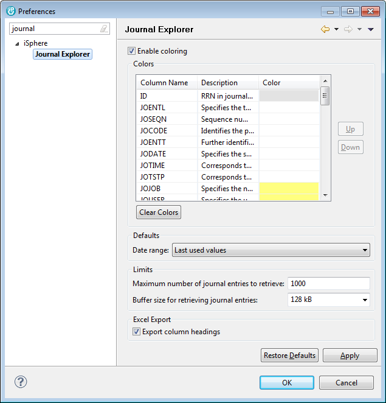

The available color options are:
| Enable coloring | - | This option will enable or disable column colors at all. |
| Up | - | Moves the selected entry one position up. |
| Down | - | Moves the selected entry one position down. |
| Clear Colors | - | Removes all colors. |
The available Defaults are:
| Date range | - | Use this option to specify the default date range that is selected, when using
the Display Journal Entries option. The available options are:
|
The available Limits are:
| Maximum number of journal entries to retrieve | - | Use this option to specify the maximum number of journal entries that are downloaded to the client PC. You may run into an Out Of Memory Error, if this limit is to high. The actual number of items that can be downloaded to your PC depends on the amount of memory available. The initial default value is 1000. With RDP 8.0 on a PC with 16 GB Ram it was possible to download 20000 items of 8kb. |
| Buffer size for retrieving journal entries | - | Use this option to specify the size of the communication buffer between the client and the host when retrieving journal entries. The buffer must be large enough to hold at least one journal entry. The value specified here is aligned to the next lower 16-byte-boundary before it is used for calling the remote API. |
The available Excel Export properties are:
| Export column headings | - | Specifies whether the column headings of the journaled file are added to the Excel file.
The export is a bit slower, when this option is enabled, because the journal entries must be
scanned beforehand to check that all entries are from the same file.
The column headings cannot be exported, when the journal entries are from different files. |